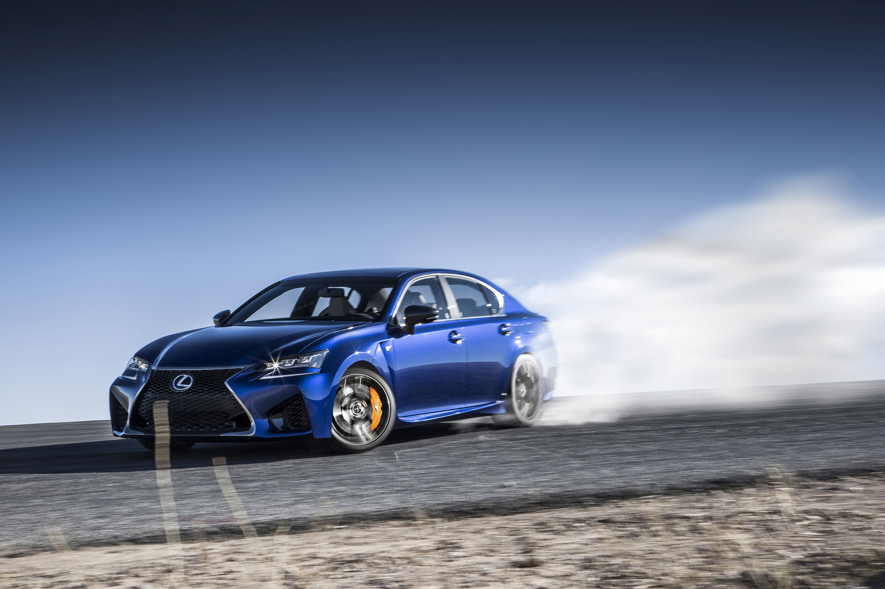

Lexus of North America released the Lexus GSF high-performance sedan in 2016. With this release came an abundance of advertisements. Lexus of North America needed a billboard design to showcase their GSF. This is the first time a high-performance version of the GS model has ever been released. The billboard needed to send a strong message to potential customers and to competitors.
Lexus provided me with a single image, as seen below. I wanted to portray the Lexus tearing through the competition. This design needed to represent speed without moving. I decided to make the GSF look as if it were ripping out of the billboard. This creates the idea that it is too powerful to be contained. The car ripping out of the billboard led to the slogan R.I.P. the Status Quo. The double meaning lends itself nicely to the ad and sends a strong message to the competition...Lexus is coming for you.
By necessity, I started with a rectangle that could be perfectly scaled up to the average billboard size. I layed down a black to white gradient and then overlayed the image of the GSF. I placed a white layer behind the GSF image and began creating the texture to imitate torn pages. Finally, I added the text and logo. The final iteration is shown below.

This project was accomplished using Adobe Photoshop.